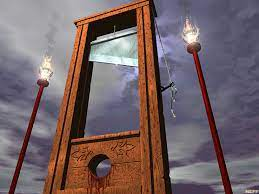

Kínzások
Nyaktiló
A guillotine-ként is ismert. A Nyaktiló a francia forradalom jelképe lett.
A nyaktiló szerkezete egyszerű. Két oszlopból állt, amik által egy éles fent kés vagy bárd felhúzható és leereszthető volt. Az elítéltet egy deszkára rakták és megkötözték, fejét pedig egy bevágásba szorították, úgy hogy a leeső bárd az elítélt testét és nyakát kettévágja.
Tömege: 580 kg Bárd tömege: 40 kg
A Nyaktilót leginkább Algériában használták a világháború idején.
Orvosi kínzás
Az orvosi kínzás vagy orvosi vallatás a kényszervallatás egyik fajtája, amelynél az orvosok fontos szerepet játszanak. Az orvosi jelenlét korlátozza a kínzott elhalálozási esélyét, de nagyobb fájdalmat tud neki okozni. Az orvos ismereteivel járulhat hozzá az áldozatok szenvedéseinek növeléséhez, azaz hajthatnak végre nagy fájdalommal járó kísérleteket.
pl:
- élveboncolás
- fájdalmas kísérletek, kezelések
Ez a kínzási forma a 2. világháborúban terjedt el, de az első világháborúban is szerepelt.